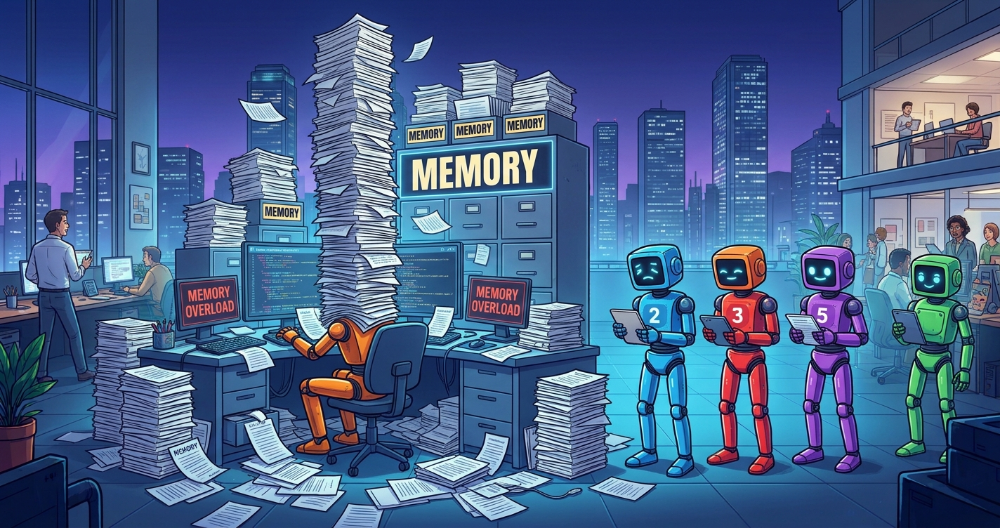

Case study · AI coding agents · Context engineering
Every Claude Code session on my codebase starts by loading the same instructions. Every hard lesson wants to live there, and every one that does makes the rest a little easier to miss. At 101 KB, my agents were reading a history book before they read a single line of the task. This is how I cut it to a budget of 75 KB, and kept everything else findable.

A session was sent to fix a problem in one corner of the system. It worked carefully: traced the failures, measured them, and spent a day and a half building an analysis. Then the doc turned up. Two confirmed production incidents and a better analysis of that exact problem, written down and sitting in the repo the whole time. Nothing listed it, so no session had ever seen it.
That's a particular kind of sinking feeling. The knowledge wasn't lost. It was invisible, which is worse, because you paid for it twice.
The obvious fix is to load more. That fails the other way.
Everything you add to an agent's context competes with everything else in it.
An instruction file starts as a page of conventions. Then a session makes a mistake, and the fix is a new rule. Then another. Each rule is right, and each one is written while the mistake is fresh, with the full story of why. A year in, the file is a history book, and the rule that matters today is somewhere in the middle of it.
Agents don't skim the way people do. A rule they loaded is a rule they weigh against everything else they loaded, and the more there is, the more often an important one loses. I measured mine at 101 KB loaded into every session, before the session had read a single line of the task.
So there are two ways to lose what you know: never load it, or load so much of it that it drowns. I had managed both at once.
The file every session loads now holds rules, stated as rules. The story behind each one, the incident and the measurements, lives in a long-form companion file under the same heading. An agent that wants to argue with a rule, or change it, follows the heading and reads why. An agent that just needs to follow it doesn't pay for the history.
A rule that a hook already enforces shrinks to one line and the hook's name. If the harness will refuse the action anyway, three paragraphs explaining why not to do it are just weight.
What differs by machine lives in a profile. My workstations can write and deploy; another machine only reads. Both load the same shared file, plus one profile chosen by a single untracked line. Profiles only add rules, never override them, because when two loaded files disagree nothing decides which one wins.
Everything module-specific lives in its own doc, and agents read only the ones a task needs. That only works if they can find them. A doc that no index lists isn't found a bit later; it is never found. That's exactly how the day and a half was lost.
So each doc now carries a small header, and the index is generated from those headers. The header holds only what can't be worked out by opening the file:
"Read before touching these files, these tables, this job." The most identifying names go first, because the index shortens long triggers and the front is the part that survives.
Built, designed but not built, live, retired. This was the field most often missing, and the most expensive to lack: an agent that reads a plan as though it were built makes confident, wrong changes.
Shared knowledge lands in the file every machine loads. Workstation-only process lands in the workstation profile. Finished work moves to an archive index that isn't loaded at all, with a one-word change to its header.
Anything that is wrong silently rather than loudly goes in the first lines of the doc, even though the evidence is further down. A trap on line 400 is not seen by a reader who previewed the first 40 and acted.
A check fails when a doc has no header or the index is stale. Another runs after every edit and checks that the files and tables a doc names still exist. That one caught three docs describing modules that had moved months earlier.
Some choices look like mistakes to anyone who wasn't there: a guard that seems redundant, a column that's deliberately left alone. Those reasons go in one long, append-only decision log, now over half a megabyte. No session loads it. Instead, the code itself carries a one-line breadcrumb at the spot that would raise the question, pointing to the entry that answers it. The log's own index, also generated, is how you find an entry by topic.
The reason is in front of you exactly when you're about to undo the thing, and costs nothing the rest of the time.
The first cut went from 101 KB to 66 KB. Every rule went through the same three questions, and nothing was deleted until its content had a home:
It contradicts the current code or another doc. Delete it. Fifteen of my agents' memory notes were in this bucket, describing work that had long since shipped or been reversed.
The same rule already lives in a doc, a skill or a hook. Delete the copy, keep the one with the most context.
It's true, but only for one module. Move it into that module's doc, where it is read exactly when it applies.
Then the budget went into the check: a warning at 70 KB, a failure at 75. Within days of the cut it had crept back to the limit, and the check refused one more memory note until its index line was shortened. It fired again while this page was being rewritten: one new memory line about writing style pushed the total to 75.1 KB, and another session's production deploy stopped until that line moved into a file that loads only when it's needed. A minute of annoyance, and exactly the point. A budget that depends on someone noticing is not a budget. One that stops a deploy gets noticed.
Add up every file that loads automatically. If you have never looked, the number will surprise you.
The rule is for every session. The story is for the session that wants to change the rule. Same heading, different file.
A hand-kept index drifts from the docs it lists. Let each doc declare when to read it, and build the index from that.
Knowledge grows by default. Only a check that fails makes it shrink.
The hooks these docs work alongside are their own case study (five AI agents, one live codebase). The index generator and doc checks are in claude-agent-ops.